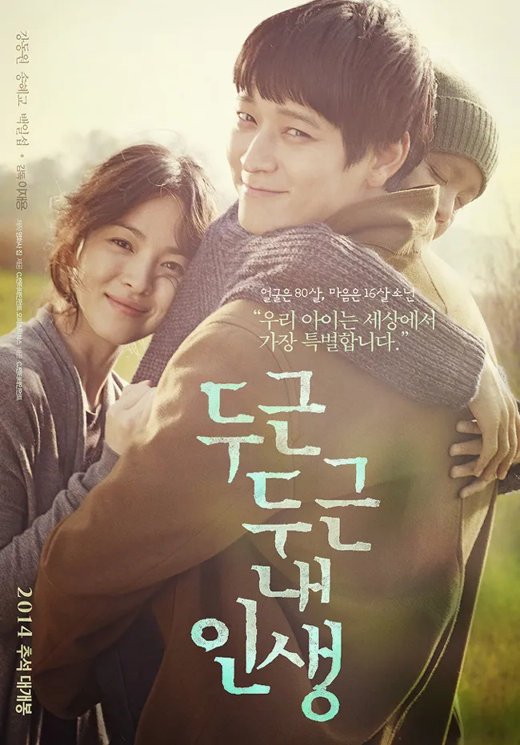
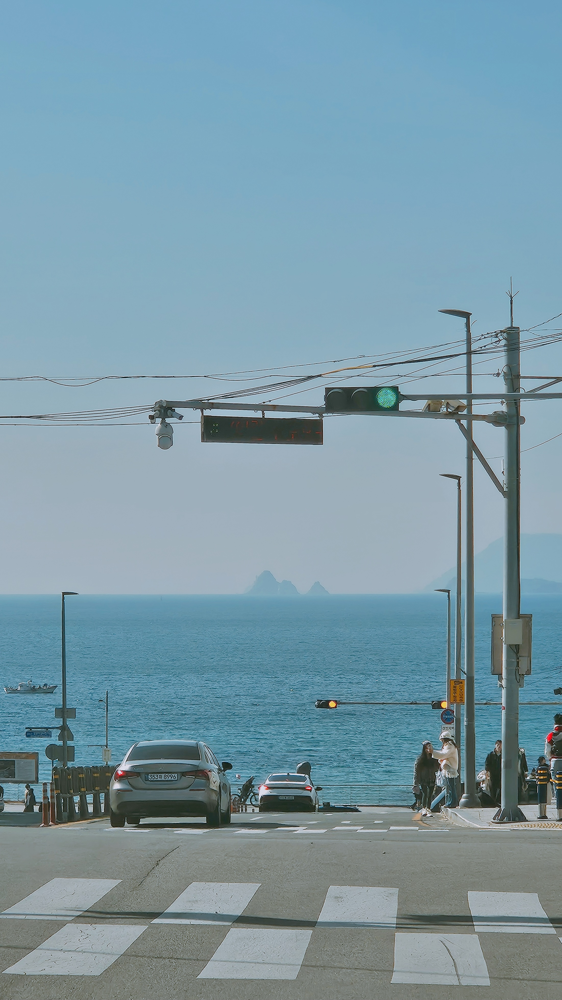

두근두근 내 인생
삶이란 무엇이며 무엇을 원동력으로 하여 살아가야 하는가에 대해 생각해볼 수 있는 영화입니다.
무지(無知)를 불꽃으로 삼는 탐구자
| 이름 | 김기영 |
|---|---|
| MBTI | INTJ |
| 취미 | 디지털 드로잉, MIDI 작곡, 소설 집필, 자기 개발 |
| 좋아하는 음식 | 고기! |
안녕하세요! 저는 모르는 것을 마주할 때 오히려 설레는, 끊임없이 배움을 즐기는 개발자 영기입니다.
디지털 드로잉으로 상상을 그리고, MIDI로 감정을 소리에 담고, 소설로 이야기를 엮으며
다양한 방식으로 세상을 표현하는 것을 좋아합니다.
개발 공부 기록은
기술 블로그에,
회고와 성장 일지는
회고 블로그에 남기고 있습니다.
코드와 프로젝트는
GitHub에서 확인하실 수 있습니다.
내 기억속 장면들


삶이란 무엇이며 무엇을 원동력으로 하여 살아가야 하는가에 대해 생각해볼 수 있는 영화입니다.
아픔이란 무엇일까, 그리고 아픔이란 지워질 수 있는가? 내 행동과 말의 무게에 대해 생각해볼 수 있는 작품입니다.
오늘 새롭게 배운 것들을 기록합니다.
header, nav, main, section, article, footer 등 시맨틱 태그의 역할과 사용법을 배웠다.